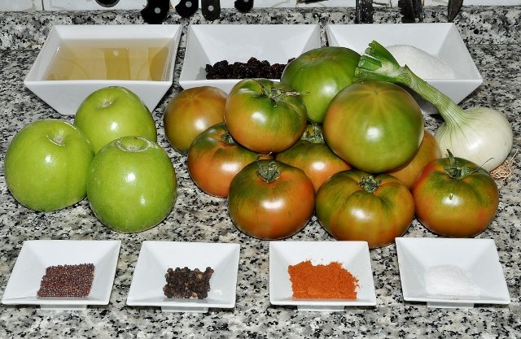
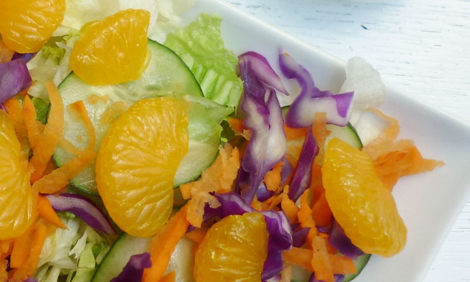

Estos tres productos fueron seleccionados entre los mas elegidos en nuestro delivery y locales
Shepherd’s Pie Vegano
(Pastel de Carne Británico) |
Chutney de tomates verdes |
Ensalada oriental
con mandarinas |
|

|

|
Puede ver mas platos y productos ingresando aqui
Receta 1:
El pastel de carne britanico es una comida de las mas faciles de veganizar. A pesar de que la comida britanica no tiene muy buena fama
el hacerlo vegano le da la ventaja de hacerlo mas liviano, pero igualmente sustancioso, ideal para dias frescos.
Es un plato muy facil de realizar y ademas, con ingredientes economicos.
Tiempo de elaboracion:
| Preparacion |
Coccion |
Total
| Raciones |
Calorias |
10 minutos
|
1 hora
|
1 hora 10 minutos
|
4 a 6
|
310 kcal
|
| Ingredientes |
Instrucciones |
- 1 kilo de papas
-
60 ml de leche de soja sin azucar
- 1 cucharadita de sal
- 1 cucharadita de aceite
- media cebolla picada
- dos dientes de ajo picados
- medio kilo de hortalizas mixtas
- 400 gramos de lentejas cocidas
- 300 gramos de champignones
- 250 ml de caldo de verduras
- 1 cucharada de salsa de soja
- 1/2 cucharadita de pimenton
- 1 cucharadita de provenzal
- pimienta a gusto
|
- Cocinar las patatas en agua con sal hasta que estén blandas.
Hacer un puré con un tenedor y añadir un poco de leche vegetal y sal.
- Pelar y cortar las hortalizas mixtas a cuadraditos.
- En una sartén grande a fuego medio-alto calentar el aceite y pochar la cebolla.
,añadir el ajo y hortalizas y freír durante 5 minutos hasta que empiecen a estar blandas.
Añadir los champiñones y freír durante 5 minutos más o hasta que las champiñones empiecen a dorarse
y luego las lentejas, caldo, salsa de soja, pimentón, hierbas de Provence, sal y pimienta y reducir el fuego a medio.
Cocinar durante 15 – 20 minutos o hasta que las hortalizas estén blandas y la salsa se haya reducido.
Mientras tanto precalentar el horno a 200°C.
- Añadir 2 o 3 cucharadas del puré de patatas a las lentejas para espesar la salsa
y poner la mezcla en una cazuela y cubrir con el puré de patatas,( yo usé una manga pastelera para hacer rosetones con las patatas aunque no es imprescindible). Se pueden untar las patatas encima del relleno y ya está.
- Hornear durante 20 – 30 minutos o hasta que las patatas empiecen a dorarse.
Echarle un ojo frecuentemente para que no se queme. Dejar enfriar 5 – 10 minutos antes de servir.
|
Receta 2:
El chutney es un condimento agridulce originario de La India. Para entendernos bien podríamos definirlo como una especie de confitura en la que frutas o verduras se cuecen a fuego lento junto con vinagre, especias muy aromáticas y azúcar.
Tiempo de elaboracion:
| Preparacion |
Coccion |
Total
| Raciones |
Calorias |
30 minutos
|
90 minutos
|
2 horas
|
---
|
---
|
| Ingredientes |
Instrucciones |
- 2 kilos de tomate verde
-
3 echalotes ( o cebollas y ajo)
- 3 manzanas verdes
- 3 cebollas de verdeo con lo verde.
- un trozo de jengibre, bien grande
- 1 vaso de pasas de uva sultaninas
- 2 vasos de vinagre de sidra o de manzanas
- 1 vaso de azucar mascavo
- 2 cucharadas de semillas de mostaza
- 1 cucharada de pimienta negra en grano
- 1 cucharada rasa de pimenton picante
- 1 cucharada de sal
|
- En una cazuela de hierro o de fondo grueso, calentar y disolver en el vinagre la sal, el azúcar y el pimentón.
- Verter en el líquido resultante, el resto de ingredientes cortados en trozos.
- Llevar a ebullición y una vez que hierva, bajar el fuego y cocer lento durante una hora y media aproximadamente, hasta que quede como una compota cremosa.
Remover a menudo para evitar que se pegue el chutney.
- Déjelo enfriar y reposar y guarde en la heladera.
- Si desease hacer conserva, tras reposar un cuarto de hora, viértalo en tarros esterilizados previamente y ciérrelos herméticamente.
|
Receta 3:
Esta es una gran ensalada de guarnición. Pero también es muy fácil convertirla en una ensalada de
plato principal agregando tofu. Puede ser tofu horneado o al grill. Además, se pueden agregar almendras en
laminas y sustituir la mandarina por naranja
Tiempo de elaboracion:
| Preparacion |
Coccion |
Total
| Raciones |
Calorias |
30 minutos
|
0 minutos
|
30 minutos
|
---
|
---
|
| Ingredientes |
Instrucciones |
- 10 hojas de lechuga romana ola que prefieran o tengan en casa.
-
1 taza de repollo morado cortado finito.
- 1 pepino.
- Media zanahoria rallada.
- Dos mandarinas medianas
Aderezo:
- 2 cucharadas de vinagre de arroz
- 3 cucharadas de salsa de soya
- 2 cucharadas de aceite de sesamo
- 1 cucharadita de aceite de oliva
|
- En un tazón pequeño mezcla la salsa de soya, el vinagre de arroz, el aceite de sésamo y el aceite
de oliva, mezclar bien con una cuchara hasta que todo se haya integrado. Reservar.
- Lava y desinfecta la lechuga. Seca muy bien. Una vez seca corta en tiritas.
- Cortar el repollo morado finamente, lava y seca muy bien.
- Cortar el pepino en rodajas del grosor que prefieras y reservar.
- Para servir poner en un plato la lechuga y repollo. Agregar las rodajas de pepino, la zanahoria
rallada, y las mandarinas..
- Puede esparcir un poco de ajonjolí tostado. verter el aderezo al final.
|